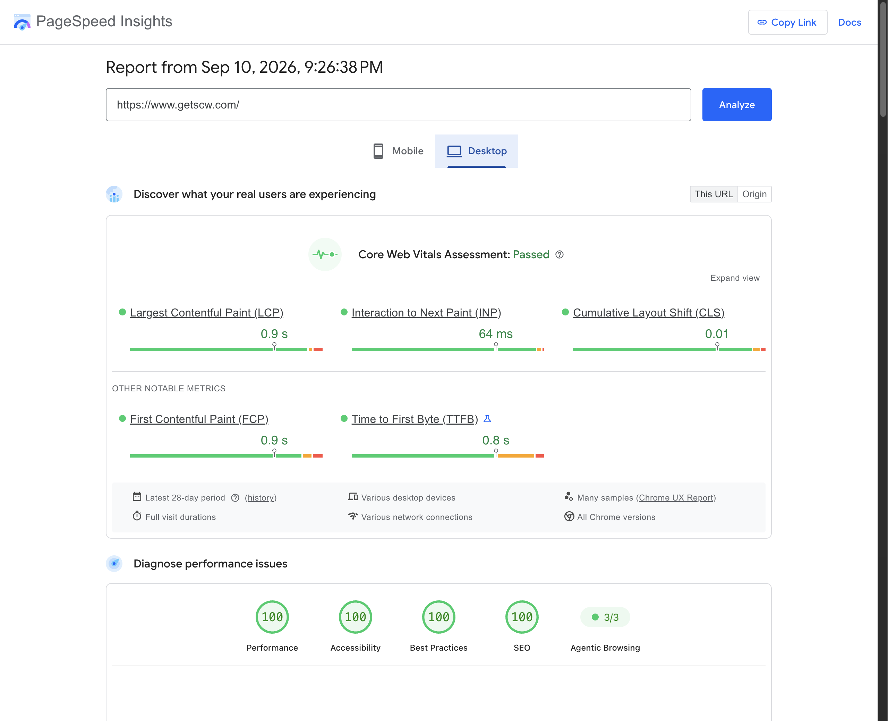

Commerce architecture / SCW case study
Leaving Magento 2: simpler to maintain, faster to improve.
The most valuable result was a platform the business could change more easily. Lower hosting costs and faster pages were measurable wins. The larger goal was to stop making every new feature a negotiation with the existing stack.
I owned the application replacement and AWS work for Security Camera Warehouse, a retailer serving consumers and business buyers. The project connected the storefront, customer history, B2B purchasing, HubSpot sales tools, payments, tax, fulfillment, and the workflows around them.
Migration and infrastructure figures are project-owner figures. PageSpeed refers to the homepage report dated September 10, 2026. Counts, scope, and measurement limits are detailed below.
The problem was the cost of change, not Magento’s capacity.
Magento can support businesses much larger than SCW. Scale was not the reason to replace it. In this implementation, custom features required working through framework conventions, extension dependencies, and a hosting estate that had become expensive to maintain.
The business needed specific capabilities: partner prices, company credit, tax exemptions, sales-assisted quotes, and connected warehouse operations. The question was whether those capabilities could be easier to change and less costly to operate in a focused application.
I built around three goals:
- Make feature work more direct. Implement business behavior in the application, with shared rules for pricing, company accounts, and integrations.
- Reduce maintenance overhead. Retire unused services and extension dependencies instead of carrying the entire old platform forward.
- Give staff practical tools. Products, refunds, approvals, and customer requests should not require a developer for every routine action.
These are architectural and operational benefits, not a claim that every future feature will take a fixed percentage less time. I do not have a controlled before-and-after development-time study. The concrete evidence is the smaller infrastructure footprint and the business workflows delivered on top of it.
Lower costs came from removing unnecessary parts.
My AWS review found unused services and resources provisioned for a traffic peak that never arrived. The replacement brought production infrastructure from approximately $5,400 to $280 per month, a reduction of about 94.8%, rounded to 95%. That is approximately $5,120 less per month for the infrastructure scope being compared.
Monthly production infrastructure
The core stack is Next.js and TypeScript, PostgreSQL, and Meilisearch. A smaller application and database setup replaced the previous hosting fleet. Cached rendering reduces repeated work, while the simpler service footprint reduces the number of systems an engineer must understand before making a change.
Search is a useful example. I replaced paid Klevu search with a custom Meilisearch implementation covering products, categories, content, filters, and sorting. A Klevu email quoted $499/month for a Premium upgrade. The replacement has $0 search subscription fees, with hosting included in infrastructure. The $499 was a quote, not a verified previous invoice, so I do not add it to the measured infrastructure savings.
Define who owns a fact before connecting the systems.
A customer may interact with the storefront while a sales rep works in HubSpot. They still need to operate on consistent business rules. I kept order and payment calculations in the commerce backend, while HubSpot provides customer and company context and the workspace for rep-authored quotes.
Commerce / PostgreSQL
Order, invoice, payment, refund, pricing, and credit-exposure facts.
Outbound: durable events, retries, duplicate protection.
HubSpot / CRM
Contacts, companies, rep-authored quotes, and mirrored commerce records.
Inbound: CRM webhooks and defined field ownership.
For example, a payment link is an entry point into checkout. It is not an authority for the amount to charge. Checkout loads source quote data and recomputes the money server-side. Company tax and credit decisions also use explicit eligibility rules, rather than trusting an arbitrary field supplied by the browser.
Carry the history and content forward, not the old rendering machinery.
The migration carried 184,785 historical orders and approximately 36,000 customers. Content needed a different kind of migration: around 500 pages encoded in Magento’s custom CMS format were rebuilt as typed React pages.
The goal was to preserve the designs, copy, links, images, metadata, and interactive content while replacing the rendering implementation. Automated parity checks catch missing text, links, images, and headings. Section-level visual review catches what text comparison cannot: broken columns, lost emphasis, incorrect spacing, or an accordion in the wrong state.
Typed pages make structural changes reviewable in code. They do not magically prove that a remote image loads or that a page looks correct. Those still require explicit checks. These pages remain developer-managed; the operational admin is not a general-purpose visual CMS.
URL preservation is a deliverable of its own.
Product, category, and CMS URL structures were preserved where applicable. The migration also retained 11,172 redirect rules: 11,020 exact-path rules and 152 patterns extracted from the accumulated Magento rewrites. That count describes rules, not 11,172 distinct rebuilt pages.
Redirects run before cached page rendering. Sitemaps exclude redirecting destinations, and structured data covers products and breadcrumbs. These measures protect search foundations; a PageSpeed SEO score is not evidence that every organic ranking stayed unchanged.
The latest performance report
| Metric | Mobile | Desktop |
|---|---|---|
| PageSpeed performance score | 89 / 100 | 100 / 100 |
| Real-user LCP | 2.3 s | 0.9 s |
| Real-user INP | 109 ms | 64 ms |
| Real-user CLS | 0 | 0.01 |
| Core Web Vitals assessment | Passed | Passed |
The historical mobile score was 46; the earlier version of this article reported 82. The latest report is 89. These are separate runs, not a controlled benchmark. The lab score and the rolling 28-day real-user assessment measure different things. Accessibility, best practices, and SEO scored 100 on both devices in this report.

The rendering strategy is deliberately straightforward: cache suitable pages, regenerate in the background, load images appropriately, and defer marketing scripts until interaction or a timeout fallback. Regression guards prevent shared layouts from quietly forcing dynamic rendering and keep tracking scripts out of initial rendering work.
The Quote Builder connects selling to the actual purchase.
I built a custom HubSpot app with eight CRM cards. The Quote Builder is the most substantial: five guided steps take a rep through products, addresses, payment, shipping, and finish.
It goes beyond a flat product list. Reps can organize a quote into named sections, add several products with quantities, configure options, adjust unit prices, and apply line discounts. Quantity-aware availability indicators help expose backorders while the quote is being prepared. Address suggestions and live tax and shipping calculations bring the commercial details into the same workspace.
A custom shipping charge can change what the customer pays while preserving the selected fulfillment service. Quote cloning creates independent line items so the copy can be edited without changing its source. Version checks reject stale saves when two reps edit the same quote.
- Card payment: generate, open, or copy a checkout link from the priced quote.
- Business payment: create an order for purchase orders, checks, or wire transfers, with required shipping and purchasing details checked before conversion.
- Proposal delivery: email a PDF attachment, route replies to the rep, generate a fresh payment link on send, and show when the quote was edited after sending.
- Readiness: point the rep to missing information and flag zero-priced lines without preventing intentional free accessories.
Website carts and the company’s floor-plan design tool can feed this quoting workflow. Other cards cover invoices, refunds, shipments, account information, and customer requests. The practical benefit is fewer system switches and less re-entry, rather than a sales-productivity percentage I have not measured.
B2B rules belong at the point of purchase.
Company purchasing includes shared credit exposure, partner pricing, and approved tax exemptions. Credit checks consider outstanding exposure plus the proposed order. Tax exemption requires the appropriate local approval and destination coverage; having a TaxJar customer identifier is not enough.
Customers can submit certificates and staff can approve requests through queues. When company membership changes, inherited benefits need to be removed without accidentally deleting an unrelated manual approval. That is business logic worth modeling explicitly.
A useful integration includes the recovery path.
For commerce events handled by the transactional outbox, the business write and its delivery record share a database transaction. A worker delivers the event asynchronously. Failed delivery is retried with backoff, and unresolved work becomes visible for staff recovery.
Durability does not mean an external API can never fail. It means the application retains enough information to retry, investigate, and reconcile. Duplicate protection must cover the destination effect, not merely the act of placing a message on a queue.
The implementation also respects lifecycle boundaries. A pending refund is not a completed refund. Notifications are emitted after successful processing. Warehouse updates arrive through webhooks with scheduled polling as a backstop, and shipment handling must account for both paths arriving together.
Payment-attempt reconciliation runs every 30 minutes to surface discrepancies such as a charge without a completed local order. That is a specific recovery job, not a claim that every system is globally reconciled on the same schedule. Aging outbox records and scheduled jobs are monitored separately.
Make stayed useful, but critical decisions moved into code.
The audit covered 462 Make scenarios and 504 HubSpot workflows. An inventory is not the same as a replacement count: disabled branches and notification-only flows should not be counted as business logic migrated.
Critical order and request logic moved into application endpoints and scheduled jobs. Make remains part of notification and signature workflows with Slack, ClickUp, and eSignatures. Retained integrations use familiar order numbers and compatible payloads, with data hydrated from persisted business records.
One operational lesson is especially useful: creating a ClickUp task does not prove that the workflow completed. Notifications, agreement processing, and final write-backs need their own verification. A branch that cannot resolve the requester should not make an unrelated downstream action disappear silently.
Test the behavior that would hurt the business if it changed.
The pricing regression corpus contains 5,730 real orders, rounded to about 6,000 in the portfolio. The reported comparison against the committed baseline produced $0.00 drift.
The scope matters. The corpus includes migrated and newer orders; it is ongoing regression protection, not a dataset consisting entirely of pre-launch acceptance tests. Replay uses fixed inputs, including stored tax and shipping, while exercising the current pricing engine. It does not independently validate live carrier rates or the tax provider.
Exact arithmetic and a reviewable baseline
The pricing design uses integer cents for arithmetic and allocates discounts without losing remainder cents. The replay compares subtotal, discount, tax base, grand total, and line totals against a committed reference. Updating that reference is an explicit operation, so an intended pricing change leaves a reviewable diff.
Commerce CI runs type checks, unit tests, and real-database integration tests. A money-test guard uses the base branch’s script when available, so editing the guard in a proposed change does not automatically redefine the check that evaluates it. Repository permissions and review still matter; this is a safeguard, not an absolute guarantee.
Test different risks at the right layer.
- Unit and API contracts: reject another customer’s saved card, changed reviewed totals, invalid credit eligibility, and malformed requests.
- Database integration: race two refund requests against the same invoice balance and race two retry workers for the same event.
- Browser behavior: exercise document uploads and the customer interactions that source inspection cannot establish.
- Content and rendering: detect missing content and architectural changes that undermine caching or deferment.
The HubSpot app inventory contains 88 project test files: 47 backend, 30 CRM-card, and 11 shared or configuration test files, excluding dependency code. That is a file count, not a test-case count or coverage percentage. Its checks include quote cloning, edit conflicts, payment-link freshness, signed PDF access, and duplicate conversion.
Technical lessons that changed how I approached the system
Fix the workload before buying more database capacity. A load-test investigation found concurrent product-option queries exhausting application connection pools while the database itself had spare CPU. Query fan-out can create apparent infrastructure pressure that a larger instance does not address directly.
Make shared state explicit. A webhook and a polling job may both observe the same missing shipment. Checking before insertion is not sufficient when those checks race. The transaction and locking strategy must protect the business identity being created.
Preserve migration semantics, not just values. Exports, null handling, dates, identifiers, and discount representations all need deliberate reconciliation. Rehearsals and contract checks are how silent data changes become visible before they are accepted.
Keep recovery operational. A retry needs a stable identity, a visible status, and a way to resolve a permanent failure. A dashboard that is green while a critical delivery job is absent is not useful monitoring.
When a replacement like this makes sense
A custom platform brings responsibility: application maintenance, security, operations, and future development still belong to someone. It is a good candidate when the business has substantial custom workflows, a clear owner for the system, and an existing stack whose cost of change is persistently too high. A standard hosted platform may be the better fit when its built-in workflows already cover the business.
For SCW, the design brought those responsibilities into a smaller, more direct system. The storefront became faster, infrastructure became cheaper, and sales and service gained tools built around their actual work.